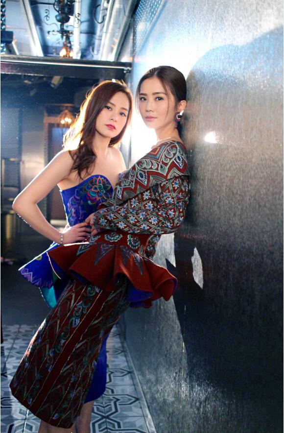

我的博客
Twins新歌SNS发布，MV创意场景亮点足
Twins继第一首派台歌《LOL》打开序幕，第二首派台新歌《SNS》于7月28日推出，《SNS》宣传片亦准备就绪。这次拍摄找来法藉男演员担任酒保一角，饰演情深歌迷，终日挂念偶像而变得茶饭不思，活在思念的他连偶像出现都浑然不知，唯在吧台上拾到一张纸条，以法文写上 “我们回来了”，片尾加上日期July 28 及hashtag (#SNS) 正好叫歌迷引颈期待。
Twins此次teaser继续唯美至上，时尚造型衬得蔡卓妍、钟欣潼二人气质出众，摆出各种姿势大展女性魅力。而镜头前，酒保这帅气角色看在Twins眼内别有一番感觉，笑谓这位法国仔非常称职，专心抹杯抹得浑然忘我；殊不知法国仔表示其实内心非常紧张，因为知道Twins是许多人的偶像，对于有机会发展这段异地情缘感到非常荣幸，而且紧张得不敢直视她们。
时下很多人都手执几个社交网站的户口，每日花上大量时间及心思，以一只手指悉心打理当中事务，自拍、拍条短片、给你个赞，甚至找个表情符号代表当日心情。网络生活，便是大家公开表现自己的舞台，一言一语一相一片，只希望得到你一个赞。Twins非常欣赏这份心思，当中所指的，不止是获得几多个赞而已，而是能够跟大家一起分享每天的喜怒哀愁。歌曲不单称赞大家的心思，也提及一些基本的社交礼仪，希望大家多一点赞少一点弹，照片拍影得不好请多多包涵，谢绝恶意中伤，建立更漂亮的网上社交圈。
而SNS的MV拍摄则特别邀请台湾导演比尔贾进行拍摄，拍摄的风格可以说独具一格，如下图所示。


导演用网上平台版面做成两个框，阿Sa及阿娇分别占一个账户，而框内则以家居作为背景，反映浏览者总是想探访别人生活的好奇心。导演从歌词中找来灵感，虽然SNS能增加人与人之间的互动，不过人还是需要实在的相处，方能发现真挚情谊。所以MV中段摄影机走回框架，彷佛回到现实中。框内的阿Sa蔡卓妍和阿Gil钟欣潼随着音乐又唱又跳， 导演要求二人模拟不同角度的自拍，伴随着不断上升的赞好人数，带出Twins互相微笑正是无上限的like。进入后期阶段，几乎每个画面都经过特地设计，例如调整画面颜色 ，加入流行的图释；歌词本身亦是一则则帖文，MV利用到这一点，以别开生面的方式将歌词呈现，令效果相当有趣。
喜欢这个风格的MV。(5分钟前)
回复这个MV拍得很好看！(6分钟前)
回复